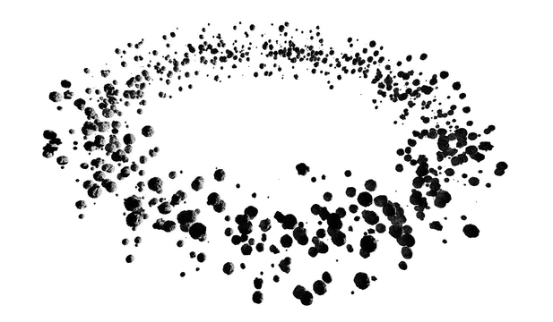
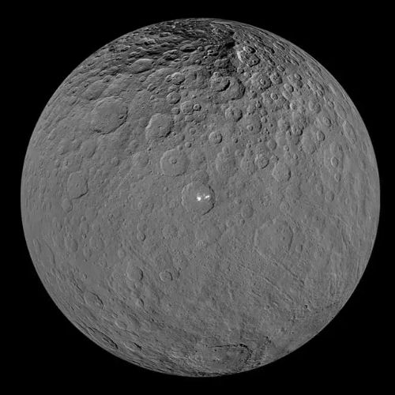
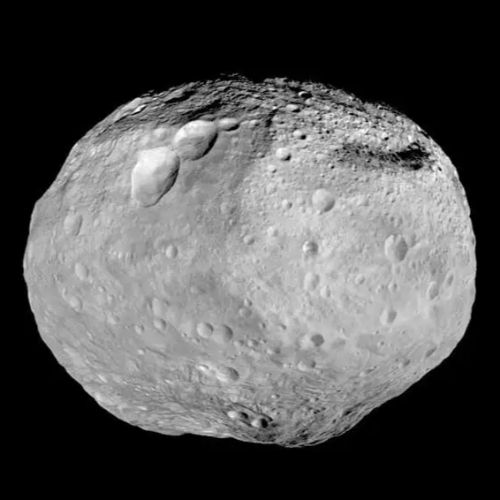
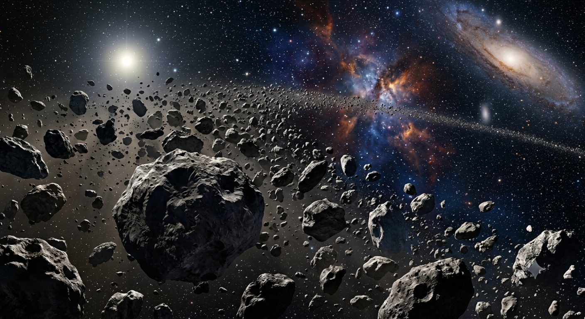

The Asteroid Belt is a vast region of millions of rocky and metallic objects orbiting the Sun between Mars and Jupiter. It contains ancient leftovers from the birth of the Solar System, preserving clues about how planets formed more than 4.5 billion years ago.

The Asteroid Belt lies between the orbits of Mars and Jupiter.
A dwarf planet nearly 940 km across.
Over 1.3 million asteroids have been discovered.
Remnants from the formation of the Solar System.
Only about 3% of the Moon's mass.
Measured from the Sun.
Contrary to popular movies, the Asteroid Belt is not crowded with closely packed rocks. The average distance between large asteroids is hundreds of thousands of kilometers. Most spacecraft can safely pass through the belt without coming close to an asteroid.
The Asteroid Belt formed approximately 4.56 billion years ago from leftover material that never became part of a planet. During the formation of the Solar System, dust and rock surrounded the young Sun. Most of this material combined to create the planets, but between Mars and Jupiter, the immense gravity of Jupiter continuously disturbed the growing objects, preventing them from merging into a single large planet.
Scientists classify asteroids according to their composition. The three primary classes are carbon-rich, rocky, and metallic asteroids.
Carbon-rich asteroids make up approximately 75% of all known asteroids. They are dark, primitive, and preserve material from the early Solar System.
Silicate or rocky asteroids account for about 17% of the population. They contain rock mixed with nickel and iron.
Metal-rich asteroids are composed mainly of nickel and iron. They are believed to be fragments of the cores of ancient protoplanets.
Although millions of asteroids exist, four bodies dominate the Asteroid Belt by size and mass.
The largest object in the belt and officially classified as a dwarf planet.
One of the brightest asteroids visible from Earth and visited by NASA's Dawn spacecraft.
The third-largest asteroid with a highly tilted orbit.
The fourth-largest asteroid and a possible dwarf planet candidate.
One of astronomy's most common questions is why the Asteroid Belt never became a planet. The answer lies in Jupiter's enormous gravity.
Jupiter repeatedly disturbed asteroid orbits, preventing them from combining into a larger world.
Instead of merging together, many objects collided at high speeds and shattered into smaller pieces.
Special gravitational resonances with Jupiter created gaps known as Kirkwood Gaps, removing many asteroids from stable orbits.
As the largest planet in the Solar System, Jupiter acts as both a protector and a disruptor. Its gravity shapes the structure of the Asteroid Belt and influences the paths of countless small bodies.
Regions where few asteroids remain because of orbital resonances.
Asteroids can slowly drift into new orbits due to Jupiter's gravity.
Some asteroids are eventually pushed toward the inner Solar System.
Jupiter also helps deflect many comets and asteroids away from the inner planets.
Despite popular movies, spacecraft usually pass through the Asteroid Belt without encountering any nearby asteroids.
The combined mass of every asteroid is only about 3% of Earth's Moon.
Many asteroids are unchanged remnants from the earliest days of the Solar System.
Although the Asteroid Belt is difficult to explore because of its enormous size, several robotic spacecraft have visited its largest objects and continue to reveal how our Solar System formed.
The first spacecraft to orbit two different extraterrestrial worlds—Vesta and Ceres.
Exploring ancient asteroids to understand the Solar System's earliest history.
Traveling to the metallic asteroid 16 Psyche, believed to be the exposed core of a protoplanet.
Many asteroids contain enormous quantities of valuable metals and water. Future missions may use these resources to support deep-space exploration and build space infrastructure.
Many asteroids belong to families created when larger parent bodies shattered during ancient collisions. Members of a family share similar orbits and compositions.
Fragments blasted from Vesta after a massive impact.
One of the largest asteroid families in the inner belt.
A large family located in the outer Asteroid Belt.
Known for their similar orbital paths and rotation rates.
Some asteroids are gradually nudged out of the Asteroid Belt and become Near-Earth Objects (NEOs). While most pose no danger, scientists continuously monitor their orbits to protect Earth from potential impacts.
Thousands of asteroids regularly pass close to Earth's orbit.
NASA and ESA actively track potentially hazardous asteroids.
NASA successfully changed the orbit of an asteroid in 2022, demonstrating planetary defense technology.
Ceres discovered by Giuseppe Piazzi.
Pallas discovered.
Juno discovered.
Vesta discovered.
Dawn entered orbit around Vesta.
Dawn reached Ceres.
Lucy mission launched.
Psyche mission launched.
Although the Asteroid Belt contains millions of objects, four bodies dominate its total mass and scientific importance.
Diameter: 939 km
The largest object in the Asteroid Belt and the only officially recognized dwarf planet in this region. Ceres contains water ice, mysterious bright salt deposits, and may have once possessed a subsurface ocean.
Diameter: 525 km
One of the brightest asteroids visible from Earth. Vesta has a differentiated interior with a crust, mantle, and metallic core, making it resemble a miniature planet.
Diameter: 512 km
Pallas follows one of the most tilted orbits of any large asteroid. It is believed to contain hydrated minerals and primitive material from the early Solar System.
Diameter: 434 km
The fourth-largest asteroid and a strong dwarf planet candidate. Hygiea appears remarkably round despite ancient giant impacts.
Hollywood often shows crowded asteroid fields, but spacecraft can usually cross the belt without encountering a nearby asteroid.
Many asteroids have remained almost unchanged since the Solar System formed over 4.5 billion years ago.
Some metallic asteroids contain enormous quantities of nickel, iron, platinum, and rare elements.
Water-rich asteroids could one day provide drinking water, oxygen, and rocket fuel for deep-space missions.
Studying asteroids helps scientists understand how planets, including Earth, were formed.
More than 1.3 million asteroids have been discovered, with countless smaller bodies still awaiting discovery.
Representative views of the Asteroid Belt and its largest worlds.

The largest object in the Asteroid Belt.

Visited and mapped by NASA's Dawn spacecraft.

An artistic view showing rocky bodies orbiting the Sun.
No. Jupiter's powerful gravity prevents most asteroids from combining into a single planet.
Yes. The Asteroid Belt is mostly empty space, and spacecraft routinely pass through it safely.
Ceres is the largest object and is classified as a dwarf planet.
Asteroids preserve material from the birth of the Solar System and may contain valuable resources for future exploration.
Some Near-Earth Asteroids cross Earth's orbit, but they are carefully tracked by space agencies around the world.
Future missions may extract water and metals from asteroids to support long-term exploration beyond Earth.